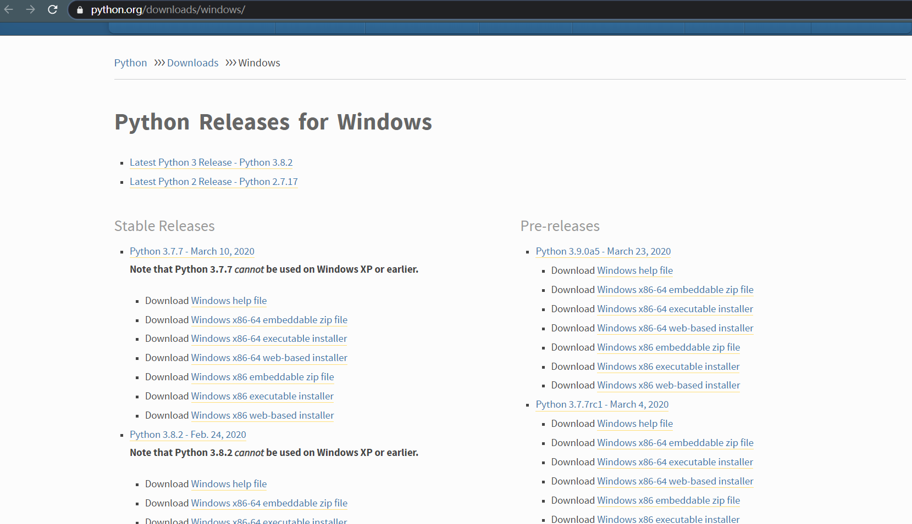
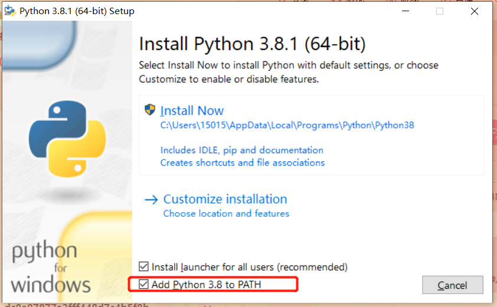
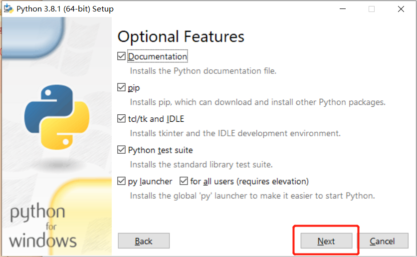
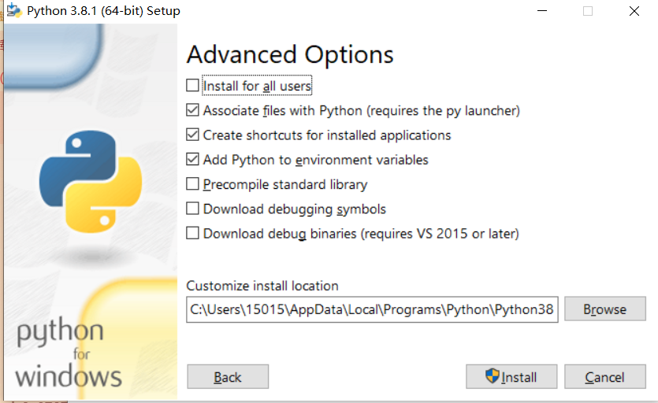
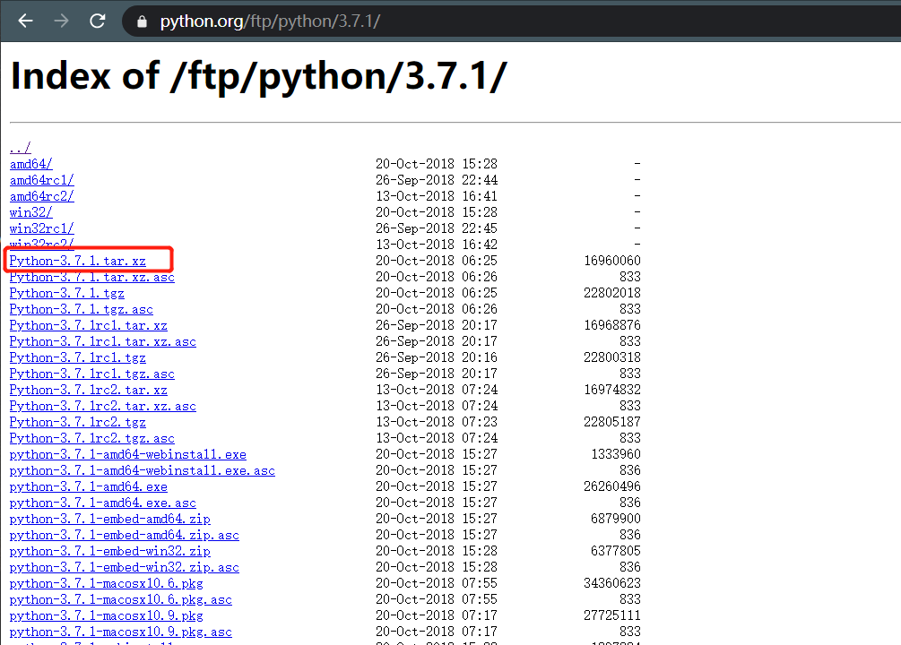

# Windows 下安装
- 进入 Python 官网下载

官网提供了两种系统位数
- X86：32 位系统
- X86-64：64 位系统
官网提供了三种版本 - web-based: 透过网络安装的，就是执行安装后才透过网络下载 python
- executable: 可執行文件的，既把要安装的 python 全部下载好在本机安装
- embeddable zipfile: zip 压缩档，就是 python 打包成 zip 压缩包
- 我选择了 3.8.1，下载完打开

勾选上 Add Python 3.X to PATH
这样就不用配置环境变量
如果想安装在 C 盘则选择 Install Now
否则选择 Customize installation
 - 选择好安装路径，安装就好了
 - 验证 Python 是否安装成功
打开 CMD, 输入下面代码，返回版本号则成功安装python -V
> Python 3.8.1
pip -V
> pip 19.2.3 from J:\Anaconda3\lib\site-packages\pip (python 3.7)
# Linux 下安装
Linux 下安装 python 有两种方式
- 通过 yum，apt 等工具安装：方便快捷，但是可选版本很少
- 通过解压安装：操作比较麻烦，但是可以选择任意版本
# CentOS
CentOs 默认安装了 python2.7，CentOS 用 python2 和 python3 命令来区分不同版本的 python
- 添加阿里镜像
wget -O /etc/yum.repos.d/epel.repo http://mirrors.aliyun.com/repo/epel-7.repo - 安装 python3.6.8
yum install python36 -y - 安装 Pip3
# 搜索 pip3 的安装包名称yum whatprovides pip3
# 安装 pip3yum install python36-pip -y - 验证
python3 --version
pip3 -V
# Ubuntu
- 安装 Python 工具
sudo apt-get install python-software-properties
- 添加仓库镜像源
sudo add-apt-repository ppa:fkrull/deadsnakes - 更新源
sudo apt-get update
- 安装 python
sudo apt-get install python3.6
- 验证
python --version
#或则python3 --version
# 通用 Linux 安装
- 首先先获取安装包，打开 pythonFtp, 选择需要安装的版本

- 一般选择.tar.xz 位后缀的文件，右键复制链接地址
 - 在 CentOs 下，这里选择 3.7.1 版本
wget https://www.python.org/ftp/python/3.7.1/Python-3.7.1.tar.xz - 解压
tar -xvf Python-3.7.2.tar.xz - 创建编译安装目录
mkdir /usr/local/python3 - 安装
cd Python-3.7.2./configure --prefix=/usr/local/python3#测试make test
#安装make && make install
- 创建软连接
ln -s /usr/local/python3/bin/python3 /usr/local/bin/python3ln -s /usr/local/python3/bin/pip3 /usr/local/bin/pip3 - 验证是否安装成功
python3 -V
pip3 -V

# Mac OS
留坑。。。。